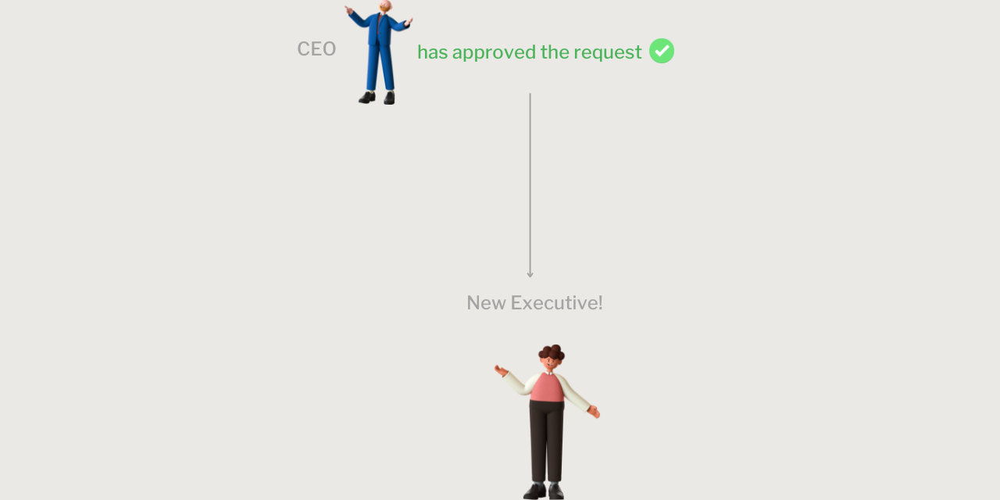

Executive Appointments
Executive Appointments is an app that is for executive appointment purpose. this app in particular has a specific circle of people who will use it to make their appointments, it is not open to all siemens employees. the workflow of the app is the following:
First we have 5 roles in this app
.png)
1. Originator
2. Managers
3. PO
4. Business Head
5. CEO
Originator is the one who creates the request, to create a request you fill out a form, inserting all the data, at the end you click "create" which creates the request and sends it to the corresponding person according to the workflow.

The manager is the one to whom the request arrives if in the hierarchy of roles he is above whoever made the "Originator" request, in which case the manager can approve the request, ask for information or refuse it. another case is that of the level 2 manager, that is, the originator can have 2 managers above him, so if the level 1 manager approves, the request will go to the level 2 manager where he can always approve, ask for information ( the request goes back to the originator where it can change some fields and resend the request) is to reject. otherwise if in the role hierarchy the originator does not have a manager then the request goes directly to the PO.
First case - in the first case, the request goes to the corresponding manager, to then go to the PO in case of approval.
Second case - the second case shows a case where the originator has 2 managers, the request goes to the PO if both approve
Third case - the third case is a case where the originator has no manager above him, so the request goes to the PO pending approval.
The PO (HR), evaluates the request sent and can decide to approve, motivating both the approval and the refusal of the request (P&O consultation), and can also request information (as seen previously).
if approved, the request goes to the Business head.
In case of refusal, the request goes back to the originator.
The business head are those who always, based on the request sent, are approved by the managers and by the po, then approve, ask for information or refuse. the business head is the last step of the workflow, but if in the form the originator selects other in the role selection field, then the request will have a further final step, the CEO, since the CEO is also a business head, if in the hierarchy of roles the originator selects "other" in the form and has the CEO as business head then the request will stop at the Business Head, to avoid sending the request twice to the same person.

The CEO is the last step, if the request reaches him, he has the power to give the final approval to appoint the executive chosen in the originator's request.
